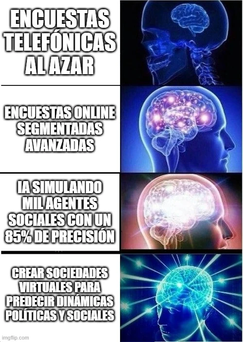

estrategIA #67 ·
De la encuesta al mundo simulado
El contexto
La escala de cerebros acompaña el artículo sobre agentes que simulan comportamientos sociales. El 85 % remite al resultado descrito en aquel estudio, no a una garantía general de predicción electoral; la última viñeta lleva la idea hasta sociedades virtuales completas.
Publicado en: estrategIA #67 - Predecir para influir: el poder de la IA en la comunicación política y social
Leer el texto de la imagen
ENCUESTAS TELEFÓNICAS AL AZAR ENCUESTAS ONLINE SEGMENTADAS AVANZADAS IA SIMULANDO MIL AGENTES SOCIALES CON UN 85% DE PRECISIÓN CREAR SOCIEDADES VIRTUALES PARA PREDECIR DINÁMICAS POLÍTICAS Y SOCIALES
Marca de la herramienta visible en el original: imgflip.com.